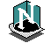
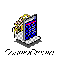
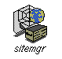

| Netscape® Communicator | Browse the World Wide Web. Netscape® Communicator is available on the IRIX Applications CD, and comes preinstalled on most systems from SGI. Netscape® Communicator includes the following:
|
 |
| Netscape® Navigator | Netscape® Lite. If you prefer to save disk space and memory and only want to use the Web browser, and not the Netscape® mail, news, or HTML editor, you can install the Netscape® Navigator Client product from the Complementary Applications CD in the "extras" directory. This will uninstall the Netscape® Communicator software. | |
| Netscape® Messenger | Netscape® Messenger is built in to Communicator. Netscape® Messenger is the default mail program for SGI. (This link only works if you have already installed Netscape® Communicator 4.05 or higher). Using Netscape® Messenger makes it easy to send and receive URLs- they automatically appear as highlighted links in your messages. Just click on the link to view the page! You can also mail references to Web sites with a single command. Launch Mail from the Communicator Menu menu within Netscape®. | |
| Mozilla | Use the latest technology to browse the World Wide Web. Mozilla is available on the IRIX Applications CD, and comes preinstalled on most systems from SGI. Mozilla includes the following:
|
|
| SGI Web Server based on Apache | Serving up web pages has never been so easy! Silicon Graphics pre-installs and configures the SGI web server based on Apache on all O2 systems. The server automatically turns on when you power on your system. All you need to do to publish your files on the Web is put them in the public_html folder that you will find in your home directory (for example, /usr/people/bob/public_html). The SGI web server based on Apache is also configured to work with OutBox Personal Web Site, which is pre-installed on most systems. The SGI web server is an easy-to-use, powerful web server for creating and managing web sites. |
|
| Cosmo Player | Browse VRML 3D Worlds. SGI ships Cosmo Player with all systems as a plug-in to Netscape®. Cosmo Player brings the power and excitement of 3D graphics to the World Wide Web. As part of the WebFORCE® software environment from SGI, Cosmo Player advances the revolution started by text-based multimedia Web browsers. With point-and-click simplicity, you can now fly through virtual cities or resorts, visualize stock market trends in 3D, or inspect 3D models of products in online catalogs. Cosmo Player enables natural, intuitive navigation of information on the Internet. Now, text, images, video, audio, and even other 3D models can be accessed directly from a 3D environment, making information access as easy as browsing in a bookstore. | |
| Cosmo Create | Author your own HTML Web pages. Cosmo Create is a powerful HTML editor that allows anyone to quickly and easily create cross-platform, media-rich Web pages. It replaces WebMagic (our previous HTML editor) and is available on the Complementary Applications CD without the need for a purchased license. CosmoCreate provides a WYSIWYG (what you see is what you get) user interface that automatically generates HTML. Incorporating text, images, video, and audio is as simple as drag and drop, enabling you to focus on content instead of worrying about HTML tags. Cosmo Create includes a set of predefined templates for the quick creation of standard home pages. You can find the Cosmo Create icon on the WebTools page of the Icon Catalog. |  |
| OutBox Personal Web Site | Publish information to your intranet. With the OutBox Personal Web Site, you can make files on your system easily available to co-workers, regardless of the computing platform they are using. OutBox creates default personal home pages for all users and a system home page, which you can use as-is or modify as needed. Outbox uses the SGI web server based on Apache, which is pre-installed on most systems. |
|
| Site Manager | Manage the content on your growing site easily. When your site has anywhere from 25 to 25,000 or more pages and you want revision control with an easy-to-use interface, use Site Manager. Site Manager gives you link and HTML validation, a cool 3D hyperbolic view of your links, and usage statistics from the server traffic logs. Site Manager is perfect for a collaborative authoring team or any site that wants more control and metadata. The Site Manager Server should be configured by someone knowledgable about Web servers. See the Site Manager release notes for more details. Site Manager works well with SGI web server based on Apache. You can find the icon for Site Manager on the WebTools page of the Icon Catalog. |
 |
| WebJumper | Jump easily to your favorite hotspots on the Web. Web Jumper allows you to save URLs as desktop icons and then double-click the icon to view the page. Organizing the icons on your desktop becomes easy. The icon for Web Jumper is on the Web Tools page of the Icon Catalog. | |